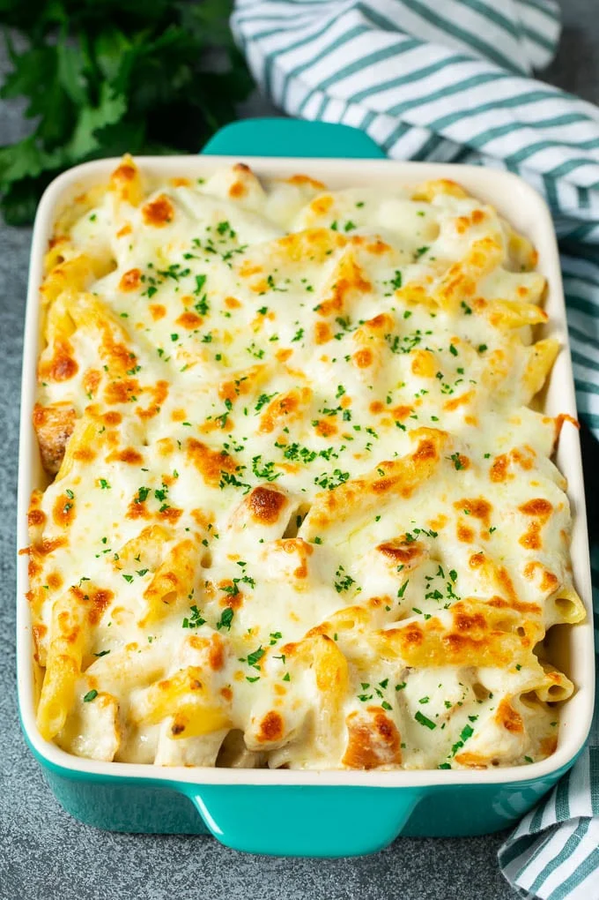

Chicken Alfredo Bake

Description
This Chicken Alfredo Bake is penne pasta tossed with cooked chicken and a creamy sacue, then topped with cheese and baked to perfection. A comfort food classic that's perfect for feeding a crowd!
Ingredients
- 12 ounces penne pasta cooked in salted water according to package directions
- 3 cups diced cooked chicken
- 3 tablespoons butter
- 2 tablespoons flour
- 1 teaspoon minced garlic
- 2 cups whole milk
- 1 cup heavy cream
- 3/4 cup grated parmesan cheese
- 2 cups shredded mozzarella cheese divided use
- salt and pepper to taste
- cooking spray
- 1 tablespoon parsley chopped
Steps
- Preheat the oven to 375 degrees. Coat a 3 quart baking dish with cooking spray.
- Melt the butter in a large pan over medium heat. Add the garlic and cook for 30 seconds. Whisk in the flour and cook for 1 minute.
- Pour in the milk and cream, then simmer, whisking constantly, until sauce has just thickened.
- Add the parmesan cheese and 1/2 cup shredded mozzarella to the milk mixture, along with salt and pepper to taste.
- Stir until cheese has melted.
- Place the pasta and chicken in a large bowl. Pour the sauce over the top, and toss to coat evenly.
- Pour the pasta mixture into the prepared pan, and top with remaining mozzarella cheese.
- Bake, uncovered, for 20 minutes or until pasta is bubbly and cheese has just started to brown.
- Sprinkle parsley over the top, then serve.